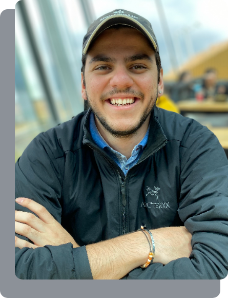

<div [class]="(shouldDisplaySideNav) ? 'col-md-12 container' : 'col-md-12 container-none'">
    <div class="col-md-12 about-section">
        <div class="col-md-5 image">
            
        </div>
        <div class="col-md-7 content">
            <span class="small-title">About Me</span>
            <div class="associates">
                
                
                
                
                
                
            </div>
            <br>
            <div class="about-initial">
                <span>My name is Marc Merih Atasoy. I am a 23 year old Industrial Engineer, but my career has been in the realm of <span style="color: #00FEB1;">software</span>. In my personal work, I also have been doing a lot of work in the arts.</span>
                <br><br>
                <span>I was born in Istanbul, the city that straddles Europe and Asia. Since then, I have also lived in Moscow, and Toronto (predominantly, since 2008). </span>
            </div>
            <br>
            <div class="hobbies">
                <span class="hobbies-title">Things I enjoy doing...</span>
                <br><br>
                <span class="hobbies-description">I have been a classical pianist for 14 years. Some of my favourite virtuosos to play are Frederic Chopin, Ludwig van Beethoven, and more modernly, Fazil Say.</span>
                <br><br>
                <span class="hobbies-description">Growing up in the mediterranean, I have grown to love sailing. Following my move to Toronto, this passion has since transformed into sailing larger boats, i.e. a 46 footer Beneteau in Lake Ontario.</span>
                <br><br>
                <span class="hobbies-description">I am also an avid football fan, and I live and breathe all things Fenerbahce (a football team on the Asian side of Turkey), which was an heirloom from my father to me.</span>
            </div>
            <br>
            <div class="curriculum">
                <span class="curriculum-title">Curriculum vitae...</span>
                <br><br>
                <app-vitae></app-vitae>
            </div>
        </div>
    </div>
</div>